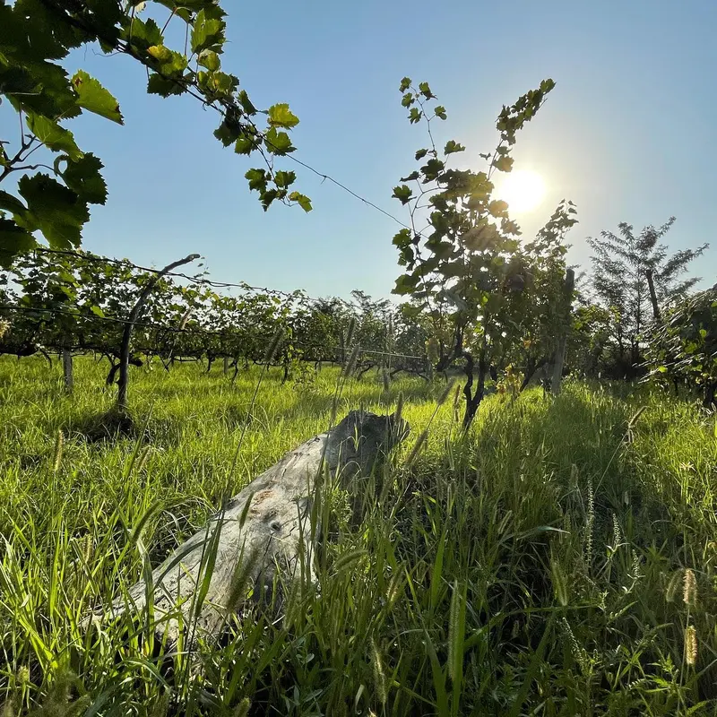
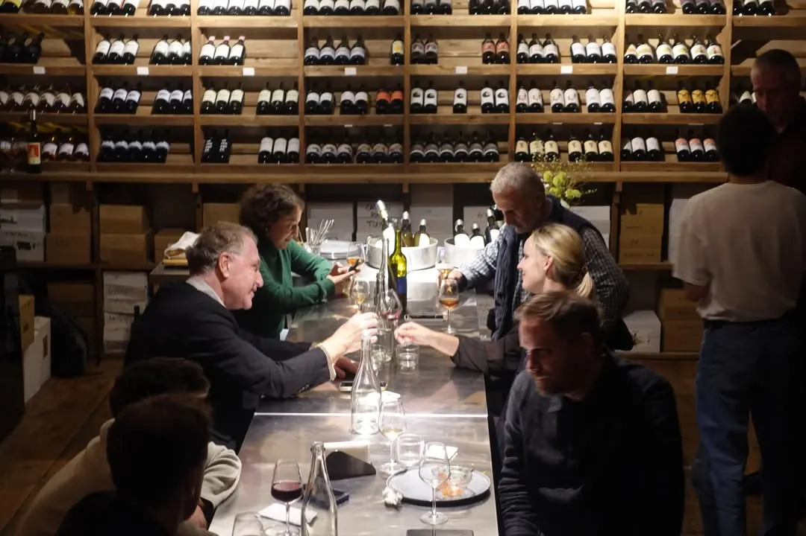
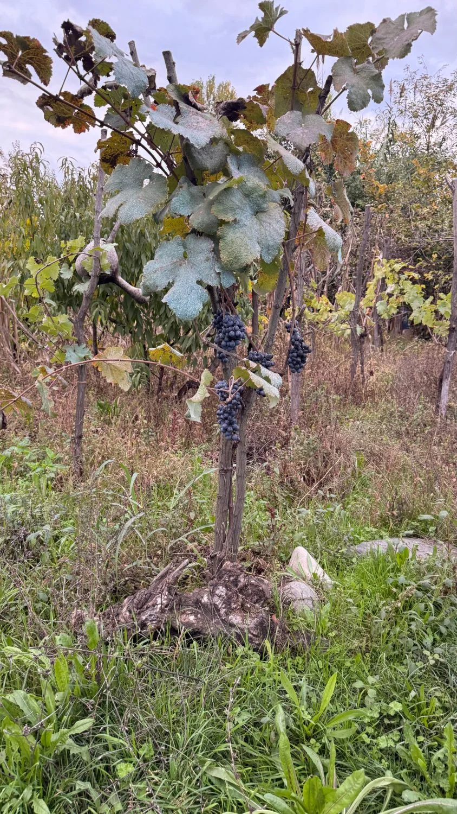
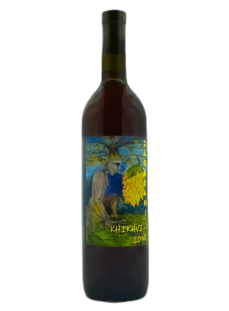
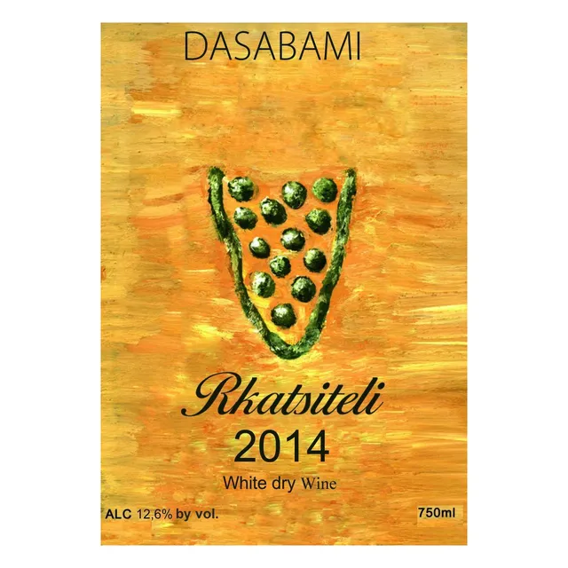
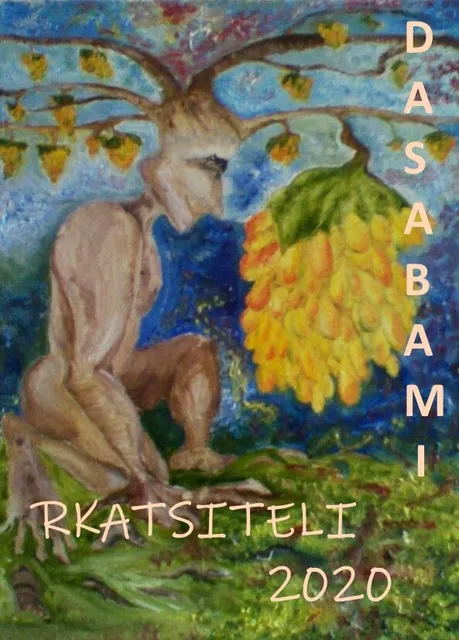

0ha
VignobleEn bio, cultivé en famille, à Tamarisi
Vin nature et bio élevé en qvevri, issu d’une vigne familiale de 70 ans en Kvemo Kartli, en Géorgie. Quatre cépages autochtones, et un qvevri plus que centenaire.

Sur les collines de Kvemo Kartli, une famille cultive en bio un seul hectare de vignes de 70 ans, et laisse Rkatsiteli, Mtsvane, Khikhvi et Tavkveri devenir du vin comme le faisait le père de Zaza : sur leurs peaux, dans l’argile, sous la terre.

VignobleEn bio, cultivé en famille, à Tamarisi

Vieilles vignesL’âge de la vigne familiale

Bouteilles par anAu maximum. Chaque vin ne fait que quelques centaines de bouteilles.

Qvevri centenaireLa jarre en argile de la famille, plus que centenaire

Première mise en bouteilleAprès trois générations de vignerons

Dasabami a été fondé par le père de Zaza dans le village de Tamarisi, au sud de Tbilissi. Zaza a repris de lui le marani familial, le chai traditionnel, et aujourd’hui toute la famille fait le vin ensemble.
Militaire de métier, Zaza a mis le vin familial en bouteille pour la première fois en 2012. Dasabami est membre de la Natural Wine Association de Géorgie.




Raisins bio, levures indigènes, ni collage ni filtration. Les blancs macèrent sur leurs peaux en qvevri et deviennent des vins ambrés, ou vins orange ; le Tavkveri est le rouge.
Voir tous les vinsPour chaque vin : levures indigènes, fermentation et élevage en qvevri, ni collage ni filtration, sans SO₂ ajouté, sol alluvial, 75 cl.
Source : Roni Selects fiches techniques (importateur américain). Les barres sont rapportées à 12 mois et à 900 bouteilles.
La vinification en qvevri, c’est la façon dont la Géorgie fait du vin nature depuis quelque 8 000 ans. Chez Dasabami, rien n’a changé.


Un hectare à Tamarisi, à l’est de la rivière Khrami. La vigne a environ 70 ans et est plantée de Rkatsiteli, Mtsvane et Tavkveri ; le Khikhvi a été ajouté vers 2009.
Une vigne familiale, travaillée saison après saison. En hiver, les vieilles vignes palissées sont taillées à la main, prêtes pour le prochain millésime.
Les raisins fermentent avec leurs propres levures indigènes dans des qvevri en argile enterrés, dont l’un a plus d’un siècle. Les blancs restent sur leurs peaux de trois à douze mois et prennent une teinte ambrée.
Ni collage, ni filtration, sans SO₂ ajouté. Chaque vin ne fait que quelques centaines de bouteilles, environ 3 000 au total chaque année.
this Rkatsiteli she selected for us was divine.
Compté parmi les vignerons à l’origine du mouvement du vin nature en Géorgie.
Un seul hectare familial, environ 3 000 bouteilles par an, et un qvevri familial plus que centenaire.
Présenté dans Tasting Georgia : un trajet avec Zaza de Tbilissi jusqu’à sa cave de Tamarisi, en passant par les caves à qvevri de Shavnabada.
Zaza a repris le marani de son père et emmène son jeune fils dans les vignes pour que la tradition continue.
Le Rkatsiteli 2010, cinq ans en qvevri : soyeux, ambre doré, sur la plaquebière et l’argousier, et superbe avec du fromage.
La boutique de vin nature de Hambourg a classé le Khikhvi 2018 parmi les vins énergiques, vibrants et profonds.
Sur notre Instagram, et chez les bars, cavistes et amis qui nous identifient.
Les lieux qui ont vendu ou servi Dasabami. Pour les bouteilles disponibles, écrivez-nous.


Des boutiques du monde entier qui ont proposé Dasabami. Pour acheter une bouteille, écrivez-nous.

MORE Natural Wine Berlin · livre l’UE et le Royaume-Uni Khikhvi 2019 Hop Burns & Black
Londres, Royaume-Uni
Rkatsiteli 2016
Hop Burns & Black
Londres, Royaume-Uni
Rkatsiteli 2016

The Cellar d’Or Ithaca, New York Rkatsiteli 2022 et 2020 Grand Wine Cellar
Syosset, New York
Rkatsiteli · caisse de 12 bouteilles
Flatiron Wines
San Francisco
Collection Dasabami
Grand Wine Cellar
Syosset, New York
Rkatsiteli · caisse de 12 bouteilles
Flatiron Wines
San Francisco
Collection Dasabami
Profils, avis et importateur

Roni Selects Importateur américain Fiche producteur et fiches techniques Raisin
Appli de vin nature
Avis de la communauté
Raisin
Appli de vin nature
Avis de la communauté
 Natural Wine Association
Géorgie
Profil de membre et vignes
Natural Wine Association
Géorgie
Profil de membre et vignes
 Wines of Georgia
Annuaire
Fiche domaine
Wines of Georgia
Annuaire
Fiche domaine
 Vivino
3,8 sur 222 notes
Page du domaine
Vivino
3,8 sur 222 notes
Page du domaine

Dasabami fait déguster ses vins à Amber Georgia, le salon itinérant du vin nature géorgien, le 28 novembre 2026.
Dasabami (დასაბამი, « le commencement ») est une cave familiale de vin nature à Tamarisi, un village de la municipalité de Marneuli, en Kvemo Kartli (Géorgie). Elle a été fondée par le père du vigneron Zaza Darsavelidze et produit jusqu’à environ 3 000 bouteilles par an de vin nature et bio, élevé en qvevri, à partir d’un seul hectare.
Zaza Darsavelidze et toute sa famille. Zaza est la troisième génération de la famille à faire du vin en Basse-Kartlie, et il a mis le vin familial en bouteille pour la première fois en 2012.
Dans le village de Tamarisi, municipalité de Marneuli, en Kvemo Kartli (Basse-Kartlie), en Géorgie, au sud de Tbilissi et à l’est de la rivière Khrami. La vigne fait environ un hectare et a environ 70 ans.
Quatre cépages autochtones géorgiens : le Rkatsiteli, le Mtsvane et le Khikhvi, vinifiés en vins ambrés, et le Tavkveri, un rouge. Les vieilles vignes ont environ 70 ans ; le Khikhvi a été planté vers 2009.
En qvevri, des jarres en argile enterrées dans le sol. Les raisins fermentent avec des levures indigènes ; les raisins blancs restent sur leurs peaux de trois à douze mois et prennent une teinte ambrée. Les vins ne sont ni collés ni filtrés, et sont mis en bouteille sans SO₂ ajouté. L’un des qvevri de la famille a plus d’un siècle.
Oui. Dasabami est un vin naturel géorgien, un vrai vin nature : la vigne est cultivée en bio, les fiches techniques de l’importateur indiquent l’absence de sulfites ajoutés, des levures indigènes, ni collage ni filtration, et Dasabami est membre de la Natural Wine Association de Géorgie.
Jusqu’à environ 3 000 bouteilles par an au total. Chaque vin est un petit lot, de 180 bouteilles (Tavkveri 2020) à 900 bouteilles (Rkatsiteli 2020).
À Tbilissi, chez 27 Wine Cellar & Shop et au Sulico Wine Bar (27, rue Zandukeli) et au Dadi Wine Bar (4, rue Dadiani, près de la place de la Liberté), et aux États-Unis via l’importateur Roni Selects. Parmi les boutiques en ligne qui l’ont proposé figurent MORE Natural Wine (Berlin), Hop Burns & Black (Londres), The Cellar d’Or et Grand Wine Cellar (New York). Pour acheter une bouteille, écrivez-nous ou envoyez un message à @dasabami sur Instagram.
Dasabami (დასაბამი) signifie « le commencement » ou « l’origine » en géorgien.
Envoyez-nous un e-mail, ou envoyez un message à @dasabami sur Instagram.